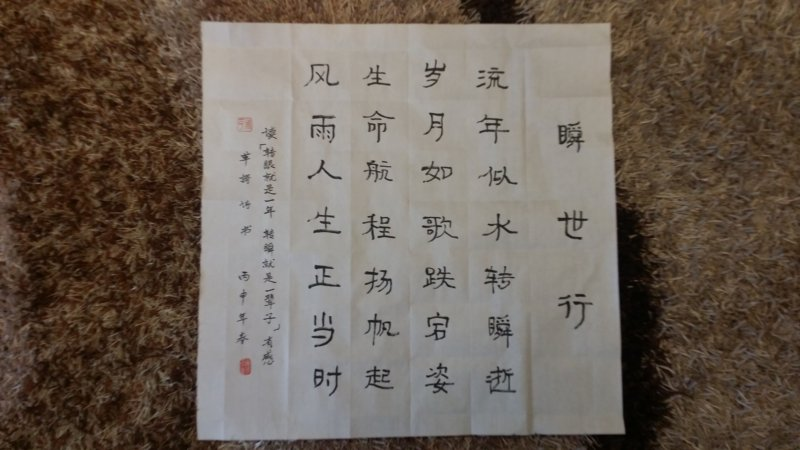
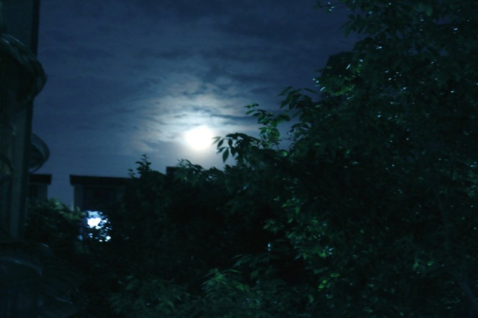

苹 謌风起于青苹之末， 狂来放謌自谴乐。
独 欢
百味人生路漫漫，
酸甜苦辣涩斑斑。
洒脱点缀心灿灿，
惟我独欢乐颠颠。
茶 道
習茶道道功，
茗香青青浓。
壺生滚滚流，
味品杯杯中。
（2015.11.07 读《喝茶十三道,道道是精华》 茶道如是,人生亦然）
瞬世行
流年似水转瞬逝，
岁月如歌跌宕姿。
生命航程扬帆起，
风雨人生正当时。
【注释】2015.11.03 读《转眼就是一年,转瞬就是一辈子》。
【赏析】时间远去不堪回首，人的年华像流水一样不断流逝。人的一生岁月， 所经历的许许多多事情，就如一首歌一样：有过灿烂辉煌，欢快愉悦； 也有过低迷时刻，平淡而惆怅......跌宕起伏。但在生命的航程里， 无论是在波峰，还是身处浪谷，都要扬帆远航。当倍加珍惜美好时光， 这正是历经人生风雨的时候啊！

故乡赞
上有天堂，
下有旺苍。
走遍天涯，
最美家乡。
（2015.10.19.看《今天才发现,去了一趟旺苍就等于去了全世界……》）
感悟人生路
漫漫人生路， 行走山水间。
万里途遥艰， 读书万卷助。
做人似若水， 做事能如山。
依山傍水乎， 脚踏实地步。
（2015.09.29 阅《老子:做人如水,做事如山》）
赏月缘
中秋之夜赏明月， 把饼邀月与君嚼。
笑语欢歌起翩舞， 同祝共愿缘聚福。
他乡亲朋最亲人， 此时醉为遥想映。
举目望月历历影， 地久天长寄深情。
2015.09.27 中秋节之夜赏月有感。

邅 途
风尘仆仆人生路，
品甜尝辣含酸苦。
侧身凭栏看斜阳，
相知遥遥在邅途。
舟平謌
长空万里蹑鹏程，
轻舟行水平如镜。
任从风卷滔滔浪，
青苹放謌声声情。
秋雨情
滴滴秋雨声，
绵绵睡意沉。
晨起远望外，
蒙蒙隔轩清。
（2015.09.16 早晨起来，见窗外蒙蒙细雨，听小提琴演奏曲《下雨的时候》之随想）
耄耋之约
惜行川南酒都城， 举杯把盏话人生。
生命苦短皆滋味， 悠悠岁月俱风尘。
笑看流年似若影， 耄耋之年来相庆。
吾生八十君祝寿， 耋至丽君将酒敬。
2015.08.28 苹謌在宜宾与杨丽相约 80 岁时互祝寿，并于 9 月 1 日作诗为证。